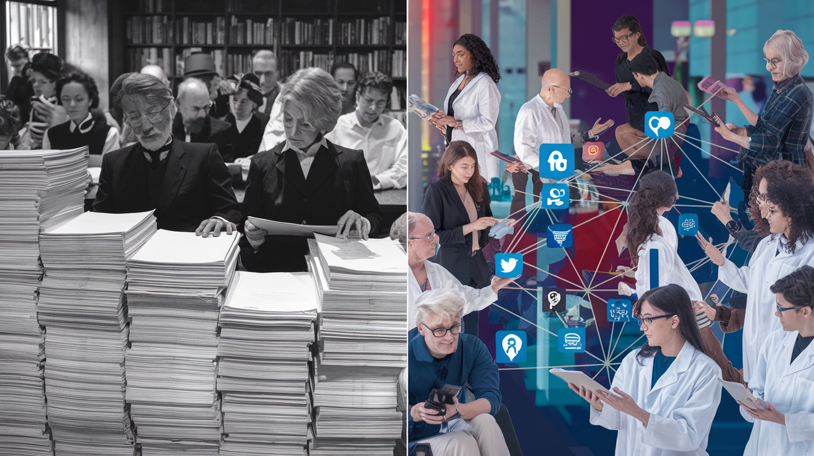

TL;DR: The death of traditional gatekeepers in journalism and science doesn’t mean the death of truth-seeking. The scientific method matters more than ever in a world where authority must be earned rather than granted.

The democratization of information distribution has fundamentally altered how Americans consume news and scientific knowledge, though not always with the intended effect of creating a better-informed public. How do we safeguard scientific truth in a world where Instagram influencers rival peer-reviewed journals?
In a revealing discussion on this week’s installment of “The Home Front” podcast with Reed Galen , veteran AP journalist Ron Fournier reflected on the transformation of American journalism over his three-decade career from 1985 to 2016. “Unless myself and maybe two dozen other reporters... decided to tell you something that was happening in Washington, you didn’t hear about it,” Fournier recalled, describing the era when traditional media served as information gatekeepers. While acknowledging the problematic aspects of this system, notably its domination by “middle-aged white males,” Fournier noted that old-school journalism provided “a common set of facts that the country debated and rallied around.”
Sadly, traditional scientific literature is following a similar trajectory. The question isn’t whether change is good or bad; it’s how to preserve scientific rigor in this new landscape. Just as traditional journalism once relied on the codes of ethics from established sources as gatekeepers to validate and distribute news, scientific knowledge was (and, to an extent, still is) primarily disseminated through peer-reviewed journals whose editorial boards claim authority as arbiters of scientific merit. While this system had flaws—including potential biases in what research got published and whose voices were heard—it provided a structured framework for validating scientific claims through peer review and methodological scrutiny.
Today’s landscape, however, has evolved dramatically in both spheres. Just as Fournier advocates humility to journalists, emphasizing that modern reporters must “earn their readership’s trust and loyalty” rather than assuming the imprimatur of the masthead, the scientific community faces similar challenges. The rise of social media “science communicators” and influencers has created new pathways for scientific information (and misinformation) to reach the public, bypassing traditional peer review processes. While this democratization of scientific communication has made complex topics more accessible to general audiences, it has also led to scientific populism, where the authority of scientific claims is increasingly judged by its popularity and algorithmic reach rather than methodological rigor.
The parallel extends further when considering Fournier’s observation about losing “a common set of facts that the country debated and rallied around.” In science communication, this fragmentation has manifested in what appears to be a paradoxical phenomenon: increased calls to “follow the science” or “do your own research” often accompany decreased engagement with primary scientific literature and methodology. Instead, many individuals and organizations selectively amplify scientific voices that confirm their beliefs, creating echo chambers that can be as narrow as the old gatekeeping systems they’ve replaced.
This transformation poses a crucial challenge for science communicators: maintaining rigorous standards while adapting to a landscape where authority must be continuously earned rather than institutionally granted. I’ve strived to meet this challenge, but my readership hasn’t exactly exploded—certainly not “virally.” Fournier suggests that modern journalism must blend traditional values with new approaches, building trust by acknowledging the shifting dynamics between information providers and audiences. For science communicators, this means going beyond merely broadcasting conclusions from new, self-appointed authorities. Transparency and accessibility are essential, but so are brevity and clarity. As Feynman demonstrated during the Challenger disaster , showing is more valuable than telling.
The danger is real and growing. While scientific integrity demands that researchers actively seek evidence that disproves their hypotheses, this principle is at odds with human nature. Numerous examples of failures, even among professed scientists, can be attributed to confirmation bias. Consider these:
Trofim Lysenko, a Soviet agricultural scientist, claimed that organisms could be ‘trained’ to change their traits, an idea unsupported by rigorous evidence. Protected by Stalin, Lysenko suppressed dissent, leading to the imprisonment or execution of thousands of scientists. Instead of testing his hypothesis through controlled experiments, evidence to the contrary was dismissed, turning his theory into unfalsifiable dogma. This illustrates how ideological commitment can override scientific integrity with devastating consequences.
The thalidomide disaster illustrates the importance of examining outliers. Dismissing early reports of congenital disabilities as statistical anomalies led to more than 10,000 malformed infants before the drug was withdrawn. Modern pharmaceutical protocols now explicitly require investigation of adverse effects.
However, there are positive counter-examples: Consider the evolution of understanding about chlorofluorocarbons (CFCs) and ozone depletion. When Molina and Rowland first hypothesized the ozone-depleting potential of CFCs in 1974, many scientists were skeptical. However, the scientific community actively designed experiments to test the hypothesis, seeking both confirming and disconfirming evidence. The scientific consensus shifted as data accumulated showing stratospheric ozone depletion and proving its mechanism. This led to the Montreal Protocol - a rare example of successful global action based on scientific evidence.
Yet, the success of the Montreal Protocol offers essential lessons about the unique challenges of addressing environmental crises. The dramatically different scales of CFC and CO2 pollution help explain their divergent policy trajectories. At their peak in 1988, global CFC emissions reached about 1.1 million tons annually, while current CO2 emissions exceeded 36 billion tons per year - a difference of more than four orders of magnitude. While both are remarkably persistent - CFC-12 remains in the atmosphere for about 100 years and CO2 for centuries to millennia - the sheer volume difference means that even if we completely stopped CO2 emissions today, its atmospheric effects would persist far longer than the ozone hole, which is already showing signs of recovery decades after CFC phaseout. This vast difference in scale and persistence, rather than just economic factors, helps explain why the Montreal Protocol’s approach to CFCs couldn’t simply be replicated for CO2.
Another positive example comes from medicine: discovering that an infectious agent, Helicobacter pylori, causes most stomach ulcers. When Barry Marshall and Robin Warren proposed this in 1982, it contradicted the established belief (and a lot of pharmaceutical products) that ulcers were the result of stress and poor diet. The medical community was initially skeptical, but the hypothesis was testable through controlled studies. As evidence accumulated, including Marshall’s famous self-experimentation, the medical consensus changed, leading to more effective treatments.
These examples suggest the scientific method contains the antidote to confirmation bias if rigorously applied. Key habits should include:
-
Maintain transparency : Document reproducible protocols anyone could follow, and ensure your sources do the same.
-
State and test null hypotheses : Assume no correlation until proven otherwise
-
Seek disconfirming evidence : Test edge cases, define conditions that would change your mind, and seek them out.
-
Welcome unexpected results: Share what you learn, and change your perspective if the facts guide you into the unknown.
The death of traditional scientific literature doesn’t mean the death of scientific thinking. The scientific method contains the tools to navigate this new landscape - from testing null hypotheses to welcoming unexpected results. As we move from institutional gatekeepers to a more democratized exchange of ideas, our challenge is not to preserve antiquated systems but to apply timeless principles in new ways. The next time you hear someone exhort others to ‘follow the science,’ engage them in the scientific process. Ask, “What’s the evidence? How was it validated, or how could we test it? What could change your mind about the conclusion?” Ultimately, science isn’t about following authorities, old or new, but about embracing the relentless pursuit of truth—guiding others to accept the journey’s destination and understand and walk the path themselves.